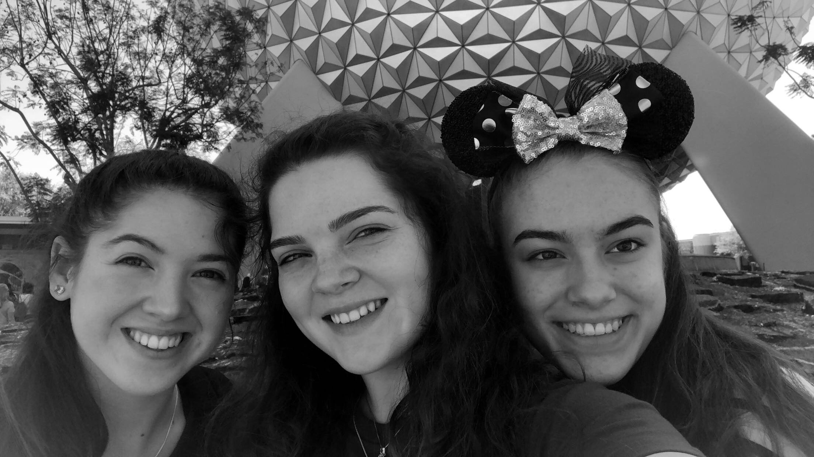

On March 2nd, 2018, the Padua Dance Team embarked on our trip to Walt Disney World. Our trip was to compete at the Contest of Champions, performing a piece that we had been rehearsing since July. We spent the weekend with each other as a final team bonding with our Seniors, who enjoyed their last big performance with the team. It was a truly unforgettable experience getting to watch many diverse team compete and also getting to hang out in the happiest place on Earth with my best friends.
The Contest of Champions was an incredible experience as a dancer. The different team all brought something interesting to the table whether it was stunts or bursts of energy that the audience ate up. Our time as a team dancing was a very overwhelming experience seeing the different cameras, judges, other teams, and the crowd of people. The team truly brought out a powerful show and achieved something special, no matter what our ranking was.
Not only did we get the experience of competing, but we got to enjoy the parks as well. Since the team is so large, we were divided into groups of 6-8. My group, just like me, were Disney junkies and we hit all the lines and the big rides. We did not waste a single moment, getting up at 5:30 to get to Animal Kingdom early to ride the newest Avatar ride before the line got too long. Then, spending time at Magic Kingdom to watch the fireworks before going to bed later than we should. I personally feel extremely lucky and fortunate to have the opportunity to spend my time in Disney World with some of my best friends, dance team, and sisters.